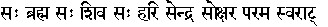

Naarayana Sooktam:
Verse I & II:
I worship the Lord who has thousands of heads, and thousands of eyes, who is the source of happiness in the world, the eternal, Hari. All this is nothing but Purusha (Ref. Purusha Sooktam Verse II)
Verse III:
I worship thee who is the Self and the Lord of the Universe, the Eternal Isvara, the benign and undecaying Narayana, the Supreme Being who is to be known, the Self of all, the Supreme Goal.
Verse IV:
Narayana is the Supreme Brahman, Narayana is the Supreme Reality, Narayana is the Supreme Light, Narayana is the Supreme Self, Narayana is the Supreme Meditator, Narayana is the Supreme Object of Meditation.
Verse V:
Narayana abides pervading whatever is seen or heard in this Universe, whatever is within and without.
Verse VI:
I worship the Infinite and Immutable Seer who is the other end of the Ocean (of Samsara) and the source of all happiness.
The Hridayam (the heart which is the place of meditation) resembles an inverted lotus bud.
Verse VII:
A span below the throat and above the navel there burns a fire from which flames are rising up. That is the great support (basis of existence) of the Universe.
Verse VIII:
It always hangs down from the arteries like a lotus bud. In the middle of it there is a tiny orifice in which all are firmly supported.
Verse IX:
In the middle of it there is a great fire with innumerable flames blazing on all sides which first consumes the food and the distributes it to all parts of the body. It is the immutable and all-knowing.
Verse X:
Its' rays constantly shoot upwards and downwards. It heats the body from head to foot. In the middle of it there is a tongue of fire, which is extremely small.
Verse XI:
It is dazzling as a streak of lightning in the midst of a dark cloud and as thin as the awn at the tip of a grain of rice, golden bright and extremely minute.
Verse XII:
In the middle of that tongue of flame the Supreme Self abides firmly. He is Brahma, He is Siva, He is Hari (Vishnu), He is Indra, He is the Immortal, the Supreme Lord of all.
This is the famous verse:

(Sah Brahma Sah Shiva Sah Hari Sendra Sokshara Parama Swaraat)
Verse XIII:
I bow down again and again to the Eternal Law, the Truth, the Supreme Brahman, the Purusha who is dark blue and reddish, the pure celibate, with extraordinary eyes who has assumed all forms.
Verse XIV:
We shall try to know Narayana, we shall contemplate on Vasudeva, let Vishnu be pleased to guide us.
Verse XV:
Lo! I proclaim the valorous deeds of Vishnu. He penetrated even the tiniest particles of dust composing the earth. He made the world of the devas stand in the heavens steadily and perpetually. He covered the three worlds in three strides. His glories are sung by great sages.
(Addressing the rope of Darbha grass strung across the entrance to a sacrificial hall or the cross pole under it):
Thou art the forehead of Vishnu, Thou art the back of Vishnu. Thou art established in the mouth of Vishnu. Thou art the penetrating power of Vishnu. Thou art the firm abode of Vishnu. Thou belongest of Vishnu. Obeisance of Thee that art Vishnu.
OM SHANTHI: SHANTHI: SHANTHI:
Click here to go back to the Veda Rahasya Home Page